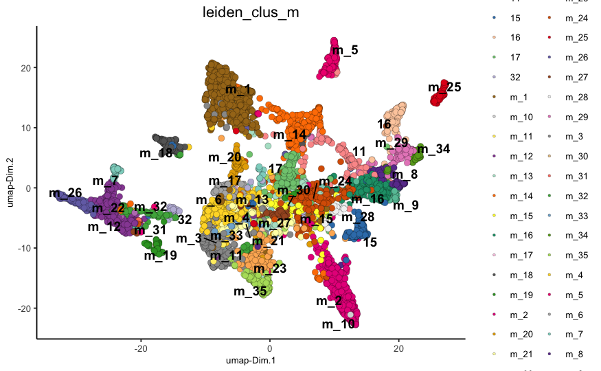
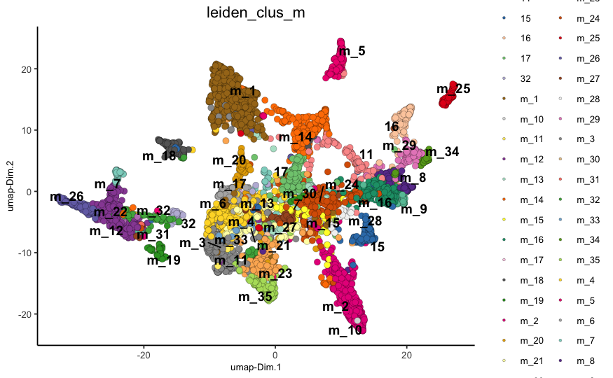
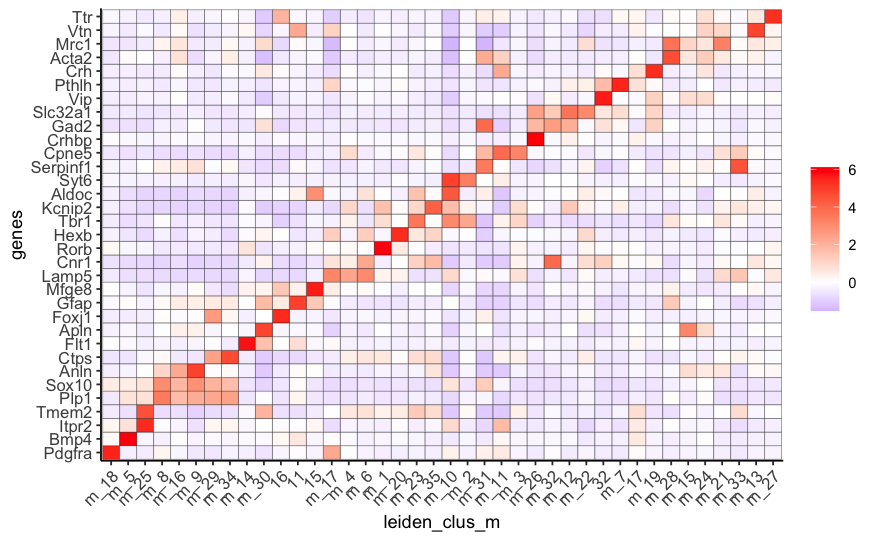
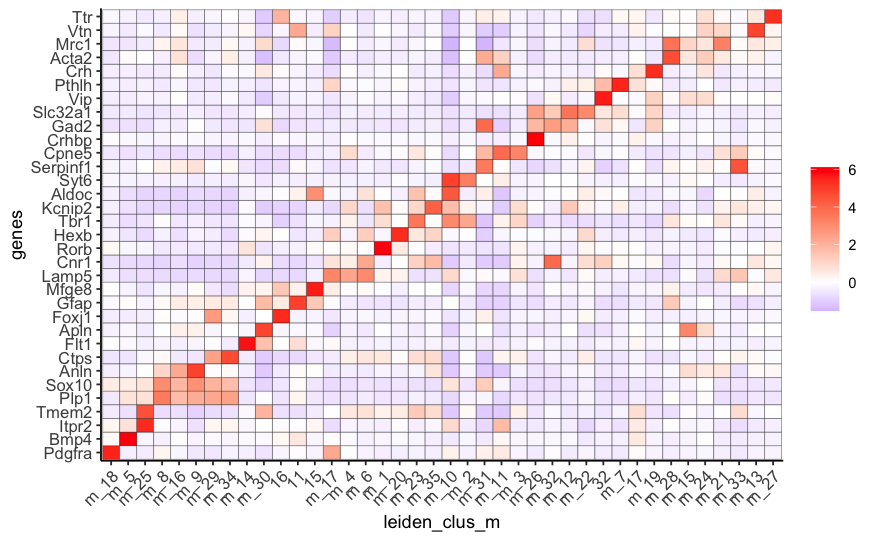
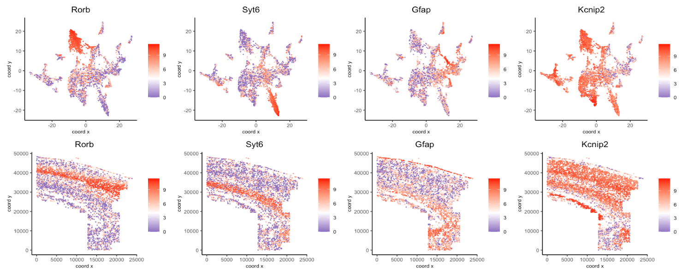
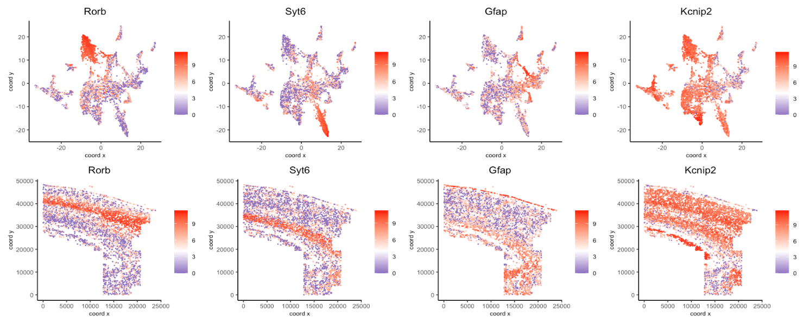

The osmFISH data to run this tutorial can be found here
Giotto global instructions
## 0. Giotto global instructions ####
# this example works with Giotto v.0.3.0
library(Giotto)
## create instructions
## instructions allow you to automatically save all plots into a chosen results folder
## Here we will not automatically save plots, for an example see the seqFISH+ or Visium dataset
## instructions allow us to automatically save all plots into a chosen results folder
my_python_path = "/your/python/path/python"
results_folder = '/your/results/path/'
instrs = createGiottoInstructions(python_path = my_python_path,
show_plot = T,
return_plot = F,
save_plot = F)Part 1: Data input
Codeluppi et al. created a cyclic single-molecule fluorescence in situ hybridization (osmFISH) technology and define the cellular organization of the somatosensory cortex with the expression of 33 genes in 5,328 cells.

## 1. PREPARE DATA ####
## ss cortex expression DATA ##
osm_exprs = read.table(file = paste0(data_dir,'/','count_matrix/osmFISH_prep_expression.txt'))
## prepare cell locations
osm_locs = read.table(file = paste0(data_dir,'/','cell_locations/osmFISH_prep_cell_coordinates.txt'))
osm_locs = osm_locs[rownames(osm_locs) %in% colnames(osm_exprs),]Part 2: Create & Process Giotto
## create
osm_test <- createGiottoObject(raw_exprs = osm_exprs, spatial_locs = osm_locs, instructions = instrs)
showGiottoInstructions(osm_test)
## add field annotation
metadata = fread(file = paste0(data_dir,'/','raw_data/osmFISH_prep_cell_metadata.txt'))
osm_test = addCellMetadata(osm_test, new_metadata = metadata,
by_column = T, column_cell_ID = 'CellID')
## filter
osm_test <- filterGiotto(gobject = osm_test,
expression_threshold = 1,
gene_det_in_min_cells = 10,
min_det_genes_per_cell = 10,
expression_values = c('raw'),
verbose = T)
## normalize
# 1. standard z-score way
osm_test <- normalizeGiotto(gobject = osm_test)
# 2. osmFISH way
raw_expr_matrix = osm_test@raw_exprs
norm_genes = (raw_expr_matrix/rowSums(raw_expr_matrix)) * nrow(raw_expr_matrix)
norm_genes_cells = t((t(norm_genes)/colSums(norm_genes)) * ncol(raw_expr_matrix))
osm_test@custom_expr = norm_genes_cells
## add gene & cell statistics
osm_test <- addStatistics(gobject = osm_test)
# save according to giotto instructions
spatPlot(gobject = osm_test, cell_color = 'ClusterName', point_size = 1.5)
spatPlot(gobject = osm_test, cell_color = 'Region')
spatPlot(gobject = osm_test, cell_color = 'ClusterID')
spatPlot(gobject = osm_test, cell_color = 'total_expr', color_as_factor = F, gradient_midpoint = 160,
gradient_limits = c(120,220))


Part 3: Dimension reduction
## highly variable genes (HVG)
# only 33 genes so use all genes
## run PCA on expression values (default)
osm_test <- runPCA(gobject = osm_test, expression_values = 'custom', scale_unit = F)
signPCA(gobject = osm_test, expression_values = 'custom')
plotPCA(osm_test)
## run UMAP and tSNE on PCA space (default)
osm_test <- runUMAP(osm_test, dimensions_to_use = 1:31, expression_values = 'custom', n_threads = 2)
plotUMAP(gobject = osm_test)
plotUMAP(gobject = osm_test,
cell_color = 'total_expr', color_as_factor = F, gradient_midpoint = 180, gradient_limits = c(120, 220))
osm_test <- runtSNE(osm_test, dimensions_to_use = 1:31, perplexity = 70, check_duplicates = F)
plotTSNE(gobject = osm_test)

Part 4: Cluster
## hierarchical clustering
osm_test = doHclust(gobject = osm_test, expression_values = 'custom', k = 34)
plotUMAP(gobject = osm_test, cell_color = 'hclust', point_size = 2.5,
show_NN_network = F, edge_alpha = 0.05)
## kmeans clustering
osm_test = doKmeans(gobject = osm_test, expression_values = 'custom', centers = 32, nstart = 500)
plotUMAP(gobject = osm_test, cell_color = 'kmeans',
point_size = 2.5, show_NN_network = F, edge_alpha = 0.05)
## Leiden clustering strategy:
# 1. overcluster
# 2. merge small clusters that are highly similar
# sNN network (default)
osm_test <- createNearestNetwork(gobject = osm_test, dimensions_to_use = 1:31, k = 15)
osm_test <- doLeidenCluster(gobject = osm_test, resolution = 0.17, n_iterations = 1000)
plotUMAP(gobject = osm_test, cell_color = 'leiden_clus', point_size = 2.5,
show_NN_network = F, edge_alpha = 0.05)
# merge small groups based on similarity
leiden_similarities = getClusterSimilarity(osm_test,
expression_values = 'custom',
cluster_column = 'leiden_clus')
osm_test = mergeClusters(osm_test, expression_values = 'custom',
cluster_column = 'leiden_clus',
new_cluster_name = 'leiden_clus_m',
max_group_size = 30, force_min_group_size = 25)
plotUMAP(gobject = osm_test, cell_color = 'leiden_clus_m', point_size = 2.5,
show_NN_network = F, edge_alpha = 0.05)
## show cluster relationships
showClusterHeatmap(gobject = osm_test, expression_values = 'custom', cluster_column = 'leiden_clus_m',
row_names_gp = grid::gpar(fontsize = 6), column_names_gp = grid::gpar(fontsize = 6))
showClusterDendrogram(osm_test, cluster_column = 'leiden_clus_m', h = 1, rotate = T)

 


Part 5: Co-visualize
# expression and spatial
spatDimPlot2D(gobject = osm_test, cell_color = 'leiden_clus_m')
spatDimPlot2D(gobject = osm_test, cell_color = 'leiden_clus_m',
dim_point_size = 2, spat_point_size = 2, select_cell_groups = 'm_8')
spatDimPlot2D(gobject = osm_test, cell_color = 'total_expr', color_as_factor = F,
gradient_midpoint = 160, gradient_limits = c(120,220))Part 6: Differential expression
## split dendrogram nodes ##
dendsplits = getDendrogramSplits(gobject = osm_test,
expression_values = 'custom',
cluster_column = 'leiden_clus_m')
split_3_markers = findGiniMarkers(gobject = osm_test, expression_values = 'custom', cluster_column = 'leiden_clus_m',
group_1 = unlist(dendsplits[3]$tree_1), group_2 = unlist(dendsplits[3]$tree_2))
## Individual populations ##
markers = findMarkers_one_vs_all(gobject = osm_test,
method = 'scran',
expression_values = 'custom',
cluster_column = 'leiden_clus_m',
min_genes = 2, rank_score = 2)
## violinplot
topgenes = markers[, head(.SD, 1), by = 'cluster']$genes
violinPlot(osm_test, genes = unique(topgenes), cluster_column = 'leiden_clus_m', expression_values = 'custom',
strip_text = 5, strip_position = 'right')
## cluster heatmap
ranked_genes = c('Pdgfra','Bmp4','Itpr2', 'Tmem2', 'Plp1',
'Sox10', 'Anln', 'Ctps', 'Flt1', 'Apln',
'Foxj1', 'Gfap', 'Mfge8', 'Lamp5', 'Cnr1',
'Rorb', 'Hexb', 'Tbr1', 'Kcnip2', 'Aldoc',
'Syt6', 'Serpinf1', 'Cpne5', 'Crhbp', 'Gad2',
'Slc32a1', 'Vip', 'Pthlh', 'Crh', 'Acta2',
'Mrc1', 'Vtn', 'Ttr')
plotMetaDataHeatmap(osm_test, expression_values = 'custom',
metadata_cols = c('leiden_clus_m'), custom_gene_order = ranked_genes) 

Part 7: Cell type annotation
## create vector with names
## compare clusters with osmFISH paper
clusters_det_SS_cortex = c('OPC', 'Olig_COP', 'Olig_NF', 'Olig_mature', 'Olig_mature',
'Olig_mature','Olig_MF', 'Olig_MF', 'Endothelial_Flt1', 'Endothelial_Apln',
'Ependymal', 'Astrocyte_Gfap', 'Astrocyte_Mfge8', 'Pyr_L2_3_L5','Pyr_L2_3_L5',
'Pyr_L2_3_L5', 'Pyr_L3_4', 'Microglia', 'Pyr_L5', 'Hippocampus',
'Pyr_L6', 'Pyr_L6', 'Pyr_L2_3', 'Pyr_L2_3', 'Pyr_L2_3',
'Inh_Crhbp', 'Inh_Cnr1', 'Inh_CP', 'Inh_CP', 'Inh_Vip',
'Inh_Pthlh', 'Inh_Crh', 'Inh_Crh', 'vSMC', 'vSMC',
'unknown', 'PVM', 'unknown', 'Pericytes', 'Choroid_Plexus')
names(clusters_det_SS_cortex) = c('m_18', 'm_5', 'm_25', 'm_8', 'm_16',
'm_9', 'm_29', 'm_34', 'm_14', 'm_30',
'16', '11', '15', 'm_17', 'm_4',
'm_6', 'm_1', 'm_20', 'm_23', 'm_35',
'm_10', 'm_2', 'm_31', 'm_11', 'm_3',
'm_26', 'm_32', 'm_12', 'm_22', '32',
'm_7', '17', 'm_19', 'm_28', 'm_15',
'm_24', 'm_21', 'm_33', 'm_13', 'm_27')
osm_test = annotateGiotto(gobject = osm_test, annotation_vector = clusters_det_SS_cortex,
cluster_column = 'leiden_clus_m', name = 'det_cell_types')
spatDimPlot2D(gobject = osm_test, cell_color = 'det_cell_types',
dim_point_size = 2, spat_point_size = 2,
plot_alignment = c("horizontal"))
## coarse cell types
clusters_coarse_SS_cortex = c('OPC', 'Olig', 'Olig', 'Olig', 'Olig',
'Olig', 'Olig', 'Olig', 'Endothelial', 'Endothelial',
'Ependymal', 'Astrocyte', 'Astrocyte', 'Pyr', 'Pyr',
'Pyr', 'Pyr', 'Microglia', 'Pyr', 'Hippocampus',
'Pyr', 'Pyr', 'Pyr', 'Pyr', 'Pyr',
'Inh', 'Inh', 'Inh', 'Inh', 'Inh',
'Inh', 'Inh', 'Inh', 'vSMC', 'vSMC',
'unknown', 'PVM', 'unknown', 'Pericytes', 'Choroid_Plexus')
names(clusters_coarse_SS_cortex) = c('OPC', 'Olig_COP', 'Olig_NF', 'Olig_mature', 'Olig_mature',
'Olig_mature','Olig_MF', 'Olig_MF', 'Endothelial_Flt1', 'Endothelial_Apln',
'Ependymal', 'Astrocyte_Gfap', 'Astrocyte_Mfge8', 'Pyr_L2_3_L5','Pyr_L2_3_L5',
'Pyr_L2_3_L5', 'Pyr_L3_4', 'Microglia', 'Pyr_L5', 'Hippocampus',
'Pyr_L6', 'Pyr_L6', 'Pyr_L2_3', 'Pyr_L2_3', 'Pyr_L2_3',
'Inh_Crhbp', 'Inh_Cnr1', 'Inh_CP', 'Inh_CP', 'Inh_Vip',
'Inh_Pthlh', 'Inh_Crh', 'Inh_Crh', 'vSMC', 'vSMC',
'unknown', 'PVM', 'unknown', 'Pericytes', 'Choroid_Plexus')
osm_test = annotateGiotto(gobject = osm_test, annotation_vector = clusters_coarse_SS_cortex,
cluster_column = 'det_cell_types', name = 'coarse_cell_types')
spatDimPlot2D(gobject = osm_test, cell_color = 'coarse_cell_types',dim_point_size = 2, spat_point_size = 2,
plot_alignment = c("horizontal"))Part 8: Visualize cell type & gene expression
# heatmaps #
showClusterHeatmap(gobject = osm_test, cluster_column = 'det_cell_types')
plotHeatmap(osm_test, genes = osm_test@gene_ID, cluster_column = 'det_cell_types',
legend_nrows = 2, expression_values = 'custom',
gene_order = 'correlation', cluster_order = 'correlation')
plotMetaDataHeatmap(osm_test, expression_values = 'custom',
metadata_cols = c('det_cell_types'))


mynames = unique(pDataDT(osm_test)$det_cell_types)
mycolorcode = Giotto:::getDistinctColors(n = length(mynames))
names(mycolorcode) = mynames
plotUMAP(gobject = osm_test, cell_color = 'det_cell_types',point_shape = 'no_border', point_size = 0.2,
cell_color_code = mycolorcode,
show_center_label = F,
label_size =2,
legend_text = 5,
legend_symbol_size = 2)
spatPlot(gobject = osm_test, cell_color = 'det_cell_types', point_shape = 'no_border', point_size = 0.2,
cell_color_code = mycolorcode,
show_legend = F,
coord_fix_ratio = 0.5,
label_size =2,
legend_text = 5,
legend_symbol_size = 2)
spatDimGenePlot2D(osm_test, expression_values = 'normalized',
genes = c('Rorb', 'Syt6', 'Gfap', 'Kcnip2'),
dim_point_size = 0.2,
spat_point_size = 0.2,
plot_alignment = 'vertical', cow_n_col = 4,
spat_point_shape = 'no_border',
dim_point_shape = 'no_border',
genes_high_color = 'red', genes_mid_color = 'white',
genes_low_color = 'darkblue', midpoint = 4)
 

Part 9: Subset cells based on spatial locations
## Subset 1###
osm_test_subset1 = subsetGiottoLocs(osm_test,
x_max = 5000, x_min = 0,
y_max = 50000, y_min = 30000)
plotUMAP(gobject = osm_test_subset1, cell_color = 'det_cell_types',point_shape = 'no_border', point_size = 1,
cell_color_code = mycolorcode,
show_center_label = F,
label_size =2,
legend_text = 5,
legend_symbol_size = 2)
spatPlot(gobject = osm_test_subset1, cell_color = 'det_cell_types', point_shape = 'no_border', point_size = 1,
cell_color_code = mycolorcode,
coord_fix_ratio = 0.25,
show_legend = F,
label_size =2,
legend_text = 5,
legend_symbol_size = 2)## Subset 2 ###
osm_test_subset2 = subsetGiottoLocs(osm_test,
x_max = 22000, x_min = 13000,
y_max = 15000, y_min = 0)
plotUMAP(gobject = osm_test_subset2, cell_color = 'det_cell_types',point_shape = 'no_border', point_size = 1,
cell_color_code = mycolorcode,
show_center_label = F,
label_size =2,
legend_text = 5,
legend_symbol_size = 2)
spatPlot(gobject = osm_test_subset2, cell_color = 'det_cell_types', point_shape = 'no_border', point_size = 1,
cell_color_code = mycolorcode,
coord_fix_ratio = 0.5,
show_legend = F,
label_size =2,
legend_text = 5,
legend_symbol_size = 2)